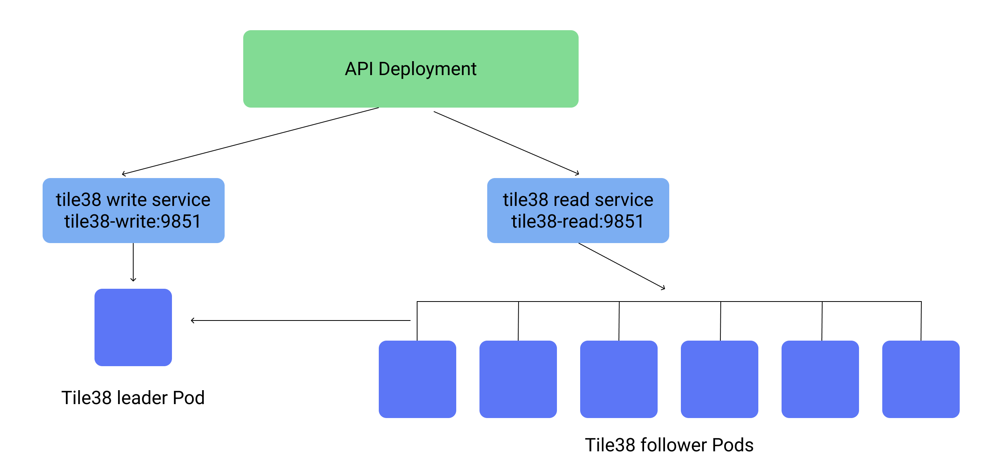

Scaling Tile38 on Kubernetes
Tile38 is a geospatial database written in golang. It is designed to compute gis data with high throughput.
For our system we needed to autoscale Tile38 from 1 instance on kubernetes to 50 or more depending on load and requests.
Since Tile38 uses mostly CPU for calculations, it is easy to add a CPU based horizontal autoscaler on kubernetes to change the number of replicas available.
leader/follower replication
Tile38 supports basic leader/follower replication. The follower instances run the tile38 command:
FOLLOW leaderhost 9851
Where leaderhost is the IP or dns hostname of the leader, it will then autosync with the leader's AOF.
For the setup, there will be one leader read/write kubernetes Deployment with a service dedicated to it, and one follower/readonly Deployment with a service for it.
This diagram shows a general overview:

`tile38.yaml`
---
# Tile38 master service
apiVersion: v1
kind: Service
metadata:
name: tile38-write
namespace: api
spec:
type: NodePort
ports:
- port: 9851
selector:
app: tile38-write
---
That service will enable your API deployment to connect to http://tile38-write:9851 or via tile38's redis adapter, tile38-write:9851.
The tile38 leader now needs a deployment of a single read/write Pod. This ensures that you are never writing to two instances that do not sync.
`tile38.yaml`
---
# Tile38 master deployment
apiVersion: extensions/v1beta1
kind: Deployment
metadata:
name: tile38-write
namespace: api
spec:
template:
metadata:
labels:
app: tile38-write
spec:
containers:
- image: "tile38/tile38:alpine"
name: tile38-write
ports:
- containerPort: 9851
name: tile38-write
---Once complete you can run kubectl apply -f tile38.yaml to setup the deployment and service. Verify that you can connect to it inside your cluster.
Now for the autoscaling read (follow) instances.
This service and deployment is what will take the brunt of all read requests, at times each pod may be using 100% of it's assigned CPU. For this setup I assigned one full CPU core to each Pod.
`tile38.yaml`
---
# Tile38 read service
apiVersion: v1
kind: Service
metadata:
name: tile38-read
namespace: api
spec:
type: NodePort
ports:
- port: 9851
selector:
app: tile38-read
---Your instances can now connect to http://tile38-read:9851 and all the requests will be balanced to all the Pods in the following Deployment:
`tile38.yaml`
---
# Tile38 read
apiVersion: extensions/v1beta1
kind: Deployment
metadata:
name: tile38-read
namespace: api
spec:
replicas: 1 # Initial replica count
template:
metadata:
labels:
app: tile38-read
spec:
containers:
- image: "stevelacy/tile38:alpine" # Custom image that contains the check.py
name: tile38-read
ports:
- containerPort: 9851
name: tile38-read
resources:
limits:
cpu: 1
requests:
cpu: 1
imagePullPolicy: Always
lifecycle:
postStart:
exec:
command: ["python", "/app/check.py"] # This is a custom script to ensure the replica "follows" the leader host
readinessProbe: # This ensures that this Pod does not show it's state as "ready" until it follows and fully connects to the leader host
exec:
command:
- python
- /app/check.py
initialDelaySeconds: 5
periodSeconds: 5
timeoutSeconds: 30
failureThreshold: 5This deployment is using a custom image, stevelacy/tile38:alpine
That image is using a python script for confirming that the leader is online: check.py
> Note: it checks to see that the leader tile38 instance has 10 or more boundaries in it's system. If you wish to have fewer than 10 boundaries please modify as needed.
Autoscaling
The core kubernetes autoscaler does a decent job of monitoring the cpu levels of the Pods and changing the requested replica counts as needed.
This autoscaling config will ensure that the replicas will start at 1 and scale up to a max of 10 when the average cpu crosses over 80%.
When the cpu load drops below 80% it will slowly start removing the excess replicas until it achieves constant 80% load or just one remaining replica.
`tile38.yaml` ``` ---
Autoscale pods based on cpu usage
apiVersion: autoscaling/v2beta1 kind: HorizontalPodAutoscaler metadata: name: tile38-autoscaler namespace: api spec: scaleTargetRef: apiVersion: apps/v1beta1 kind: Deployment name: tile38-read minReplicas: 1 maxReplicas: 10 metrics: - type: Resource resource: name: cpu targetAverageUtilization: 80
Deploy the entire tile38 config with `kubectl apply -f ./tile38.yaml`
<br />
Verify with `kubectl get deployment --namespace api` to confirm that the correct number of instances are created.
$ kubectl get deployment --namespace api NAME DESIRED CURRENT UP-TO-DATE AVAILABLE AGE tile38-write 1 1 1 1 21m tile38-read 3 3 3 3 21m
You can also send a curl request from inside the cluster to the master and read instances to get their `server` information.
$ curl tile38-read:9851/server {"ok":true,"stats":{"aof_size":6807927,"avg_item_size":126,"cpus":8,"heap_released":0,"heap_size":37048872,"http_transport":true,"id":"30b9d6ddfda2d30018503ebg49e79a21","in_memory_size":7012733,"max_heap_size":0,"mem_alloc":37048872,"num_collections":1,"num_hooks":0,"num_objects":25,"num_points":292169,"num_strings":0,"pid":38461,"pointer_size":8,"read_only":false,"threads":8},"elapsed":"1.738714ms"}
<br />
You can confirm that the autoscaling is working by submitting high traffic to the instances and checking with `kubectl`
$ kubectl get deployment --namespace api NAME DESIRED CURRENT UP-TO-DATE AVAILABLE AGE tile38-write 1 1 1 1 45m tile38-read 10 6 6 6 45m